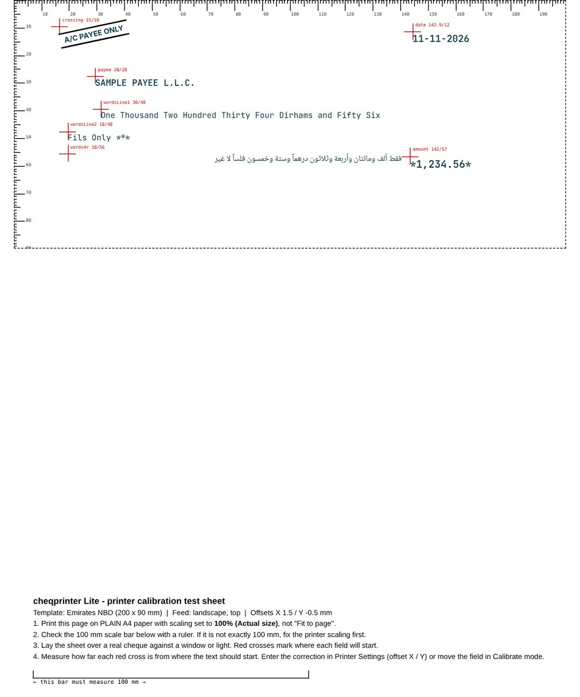
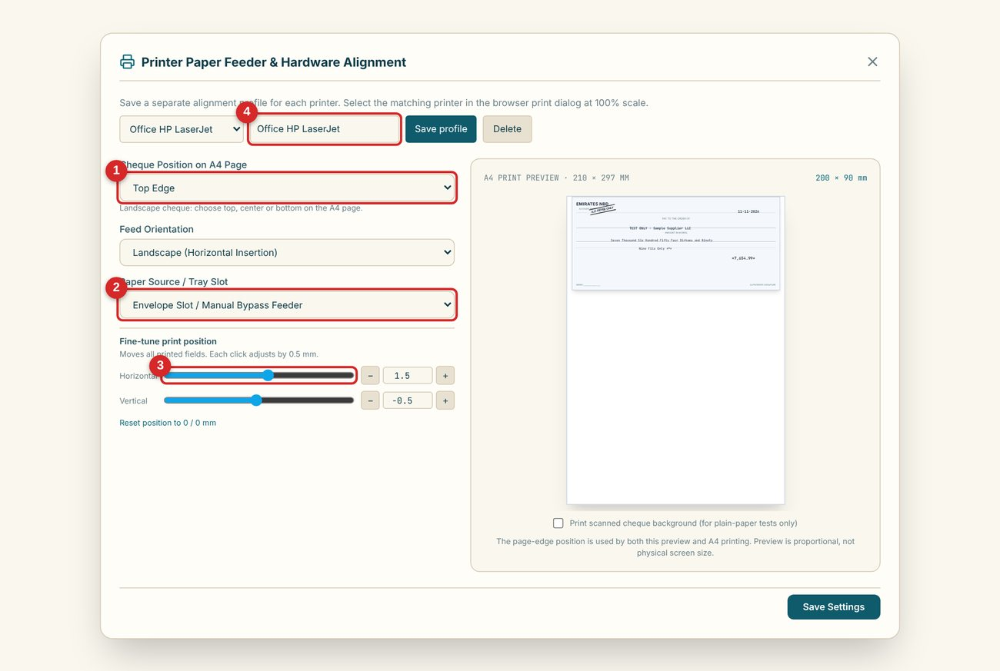

Printer alignment and the test sheet
Read the test sheet, decide whether the printer or the template needs fixing, and save an alignment profile for every printer you use.
A printed cheque is only useful if every word lands in its box. Two things decide that: where the field sits on your cheque (the template) and where your printer actually puts the paper (the printer position). CheQPrinter keeps them separate so you can fix each one on its own.
Read the test sheet

- Rulers along the top and left edges are in millimetres, so you can measure positions directly.
- Red crosses mark where each field will start. Each is labelled with its name and X / Y position in mm.
- The 100 mm bar proves the print is at true size. Measure it with a ruler. If it is not 100 mm, the browser is scaling the page: set the scale to 100% / Actual size and print again.
- Sample text (optional) shows how real text will sit against each cross.
Work out what needs fixing
| What you see | What it means | Where to fix it |
|---|---|---|
| Every cross is off by the same amount, in the same direction | Your printer feeds the paper slightly differently | Printer Settings: Horizontal / Vertical fine-tune, 0.5 mm per click |
| Only some fields are off | That field sits in the wrong place on your cheque | Calibrate: drag the field, then Save Template |
| Everything looks too small or too large; the 100 mm bar is not 100 mm | The browser is scaling the page | Print dialog: scale 100% / Actual size, not Fit to page |
| Text is cut off near an edge | Most printers cannot print right to the edge | Move the cheque on the A4 page (top, centre or bottom edge) or shift fields inward |
Printer Settings explained

- Cheque position on A4 page: top edge, centre or bottom edge. Choose the one that matches how your printer pulls a cheque through.
- Feed orientation and paper source: landscape or portrait insertion, and the tray or manual / bypass slot you use. A single cheque usually goes through the manual slot.
- Fine-tune print position: moves all printed fields together. Each click is 0.5 mm. Use the sliders for large moves and the + / - buttons for small ones.
- Print scanned cheque background: for plain-paper tests only. It prints your scan under the text so you can check alignment without wasting a real leaf.
One profile for each printer
Different printers shift paper differently. Type a name such as Office HP LaserJet and press Save profile. Add one per printer, then choose the right one from the list before printing. Saving again under the same name updates that profile. Profiles are included in your backup, and a backup from Lite can be restored in Plus.
Always test before using real cheque leaves
Print on plain paper first and hold it against a real cheque. Banks set their own rules on printed cheques, so confirm with your bank. CheQPrinter is not affiliated with any bank.